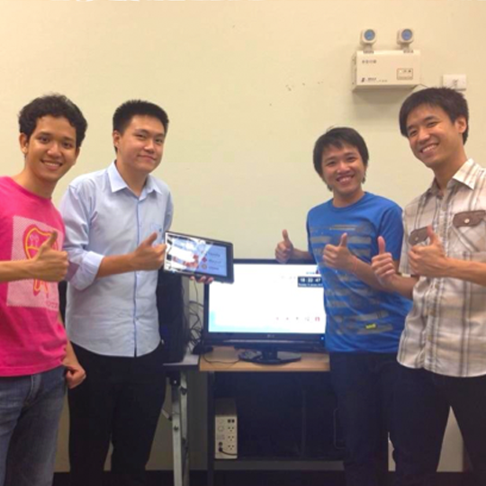
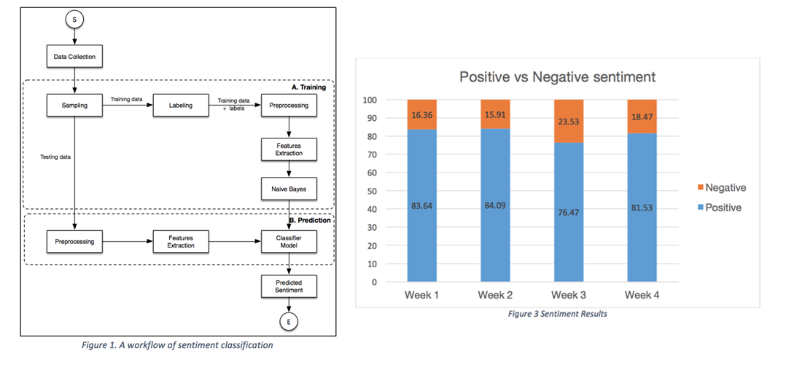

Katchaguy Areekijseree (Bebe)Syracuse University : Ph.D. student
Education
2008 - present
B.Eng (Computer Engineering)
King Mongkut's University of Technology Thongburi (KMUTT), Thailand
M.Eng (Computer Engineering)
King Mongkut's University of Technology Thongburi (KMUTT), Thailand
Ph.D. student in Computer Science
Syracuse University, NY
Portfolio
Tracing and analyzing the performance of Hadoop MapReduce
Performance Analysis
Design of Mobile-sourcing Frameworkfor the Energy Efficient Computation with MOACO
Optimization Problem
The Automatic Question-answering Bot for the Virtual Online Store Platform
Natural Language Processing
SkyPACS
System Design and Development
The Smart House
System Design and Development
ThonglorExchange.com
Web Design
Sentiment Analysis and Topic Modeling on @RealDonaldTrump (Twitter)
Data Mining
Working Experiences
2014 - Present
TA - Syracuse University
Spring 2016: ECS102 - Introduction to Computing
Fall 2015: CIS655 - Advanced Computer Architecture
Spring 2015: CIS321 - Probability and Statistics
Fall 2014: CPS400 - Data Structure
Summer 2015 - Fall 2015
RA- Syracuse University
Research Assistant under supervision of Prof. Yuzhe (Richard) Tang.
A research topic is about building secure distributed system. The goal is protect the P3I system from the adversaries and
also improve the performance of the system.

2012-2014
Senior Programmer - Novitat Co., Ltd.
I WORKED AT NOVITAT CO., LTD. AS A SYSTEM DEVELOPER. THERE ARE SEVERAL PROJECTS THAT I HAVE DONE. FOR EXAMPLE, HEALTH CARE SOLUTION, MEDIA STREAMING SYSTEM, MEDICAL IMAGING SOFTWARE AND WEB DEVELOPMENT.
2012-2014
Teacher Assistant - KMUTT
WHEN I WAS A MASTER STUDENT AT KMUTT. I WAS A TEACHER ASSISTANT FOR DATABASE MANAGEMENT LAB AND SENIOR PROJECT COURSE.
Oct - Nov 2011
Internship at SIT, Japan
I HAD AN OPPORTUNITY TO GO TO SHIBAURA INSTITUTE OF TECHNOLOGY, TOKYO. I DEVELOPED A HEART RATE DETECTION MODULE IN “THE INTELLIGENT SPACE FOR THE ELDERLY” PROJECT. RF-ECG SENSOR WAS ADOPTED FOR DETECING THE ECG SIGNAL. THIS MODULE CAN AUTOMATICALLY DETECT THE HEART RATE OF THE ELDERLY AND NOTIFY THEIR RELATIVES WHEN THE HEART IS IN BAD CONDITIONS. EX. ARRHYTHMIA, HEART ATTACK.
Mar - May 2011
Internship at Innosoft, Thailand
I WORKED AT SOFTWARE AND COMPUTING INNOVATION CENTER (INNOSOFT) AS AN INTERN. AT INNOSOFT, I HAD A OPPORTUNITY TO WORK IN MANY DIFFERENT ROLES. EX. SOFTWARE TESTER, SOFTWARE DEVELOPER AND ETC.
Nov - Mar 2010
Internship at Smart Technology Solution Co., Ltd.
I WORKED AT SMART TECHNOLOGY SOLUTION CO., LTD. AS AN INTERN. THIS COMPANY IS A DISTRIBUTOR OF IBM AND VMWARE PRODUCTS. I HAD RESPONSIBILITIES TO STUDY THE FEATURES AND LEARN HOW TO CONFIGURE THESE PRODUCTS TO SUPPORT THE SALE PERSONS. THE KNOWLEDGE THAT I GAIN FROM HERE ARE VIRTUALIZATION AND STORAGE TECHNOLOGIES.
Waiting for the next chapter!
Achievements
Project: SkyPACS
3rd place of Imagine Cup Worldwide Final 2013, St. Petersburge Russia
International Software Competition
Winner of Thailand Imagine Cup 2013
National Software Competition
Winner of National Software Contest#15, 2013
National Software Competition
Winner of Innoserve 2013, Taiwan R.O.C
International Software Competition
Winner of TICTA 2013, Thailand
National Software Competition
Winner of APICTA 2013, Hong Kong
International Software Competition
Project: The Smart House
Winner of Thailand Imagine Cup 2012
National Software Competition
Winner of i-Create 2013, Singapore
International Software Competition
Microsoft Global Exchange (MGX) 2012
Software Showcase
Publications
[1] Areekijseree, K., & Achalakul, T. (2014, May). Volunteered mobile sourcing with multi-objective ant colony optimization. In Computer Science and Software Engineering (JCSSE), 2014 11th International Joint Conference on (pp. 248-253). IEEE.
[2] Pattanangkur, T., Tanupabrungson, S., Areekijseree, K., Pumma, S., & Achalakul, T. (2015). The Design of SkyPACS: A High-Performance Mobile Medical Imaging Solution. In GPU Computing and Applications (pp. 119-133). Springer Singapore.
[3] Tivatansakul, S., Tanupaprungsun, S., Areekijseree, K., Achalakul, T., Hirasawa, K., Sawada, S., ... & Ohkura, M. (2012, August). The intelligent space for the elderly—Implementation of fall detection algorithm. In SICE Annual Conference (SICE), 2012 Proceedings of (pp. 1944-1949). IEEE.
[4] S. Tivatansakul, S. Tanupaprungsun, K. Areekijseree, T. Achalakul, K. Hirasawa, Sh. Sawada, A. Saitoh and M. Ohkura, " The intelligent space for the elderly - including activity detection -,” in the Proceedings of the 4th International Conference on Applied Human Factors and ergonomics (AHFE 2012), 21-25 July 2012, San Francisco, USA.
Tracing and analyzing the performance of Hadoop MapReduce
Tracing, Analyzing and Benchmarking Tools for Distributed System
Nowadays, a large-scale distributed system is widely used for several purposes. For example, science, business, government and academia. In order to implement this large system that consists of a large number of modules, the system is implemented by different developed teams, meaning that every developers may not know every part of the system. They know some modules which they took part. Moreover, each module is working separately on different machine. To analyze the performance of the distributed system is a difficult task, since all the components and services are distributed in the cluster and performs several tasks at the same time. Therefore, in order to diagnose the performance or observe the behavior of the system, the diagnosis or tracing tools are the most essential factor which makes developer work easily. One of the popular distributed system nowadays is Hadoop MapReduce.
Hadoop MapReduce is a software framework that aims to process a large amount of data simultaneously. The framework consists of 2 main parts which are Hadoop distributed file system (HDFS) and MapReduce. HDFS is a file system which manages and monitors all the file in the cluster. MapReduce is a processing module which acquires the input from the HDFS and splits the data into pieces, called input splits. All the jobs submitted to the framework are called MapReduce jobs. Each map reduce jobs is divided into small tasks and scattered to each node on the cluster in order to execute in parallel-fashion. However there are only 2 main function in Map Reduce which are map and reduce function. The frameworks takes care of the scheduling tasks, monitoring and re-executes if the task failed. Finally, the result is written back to the HDFS. However, the platform itself automatically decides the appropriate number of the input splits including the number of mappers and reduces. Therefore, it is very difficult to observe what happen inside the framework in the developer point of view. In addition, to investigate the resource usages is also a difficult tasks because the mapper and reduce are dynamically assigned on the runtime, meaning that we cannot know where are they until the job is submitted. With this reasons, it became our objective and goal of this project.
The Design of Mobile-sourcing Framework for the Energy Efficient Computation with Multi-objective Ant Colony Optimization
Mobile Volunteer Computing
Volunteered computing is one of the most popular distributed computing conceptsin therecent years.The basic idea is to allow computer owners to donate computing power and storage to scientific applications. Currently, the advancement of the mobile technology has madepossible the utilization ofmobile devices for serious computations. In this research, we attemptedto exploit the power of mobile devices. We believedthat by outsourcing the computation, the energy consumption at data centers can be reduced while keeping the execution time within a reasonable deadline. We then designeda mobile-sourcing framework to utilize devices’ capability and capitalize on the CPU cycles contributed from mobile users under the concept of volunteer computing. Due to the availability of volunteers, hardware limitation, and wireless network connectivity, task scheduling becomes anothercrucial process. Thus, this research also emphasizes the design and the implementation of a scheduling algorithm for the framework. We adoptedMulti-Objective Ant Colony Optimization (MOACO) to find a good balance between energy consumption and the runtime. In order to validate the effectiveness of the scheduler, we performed a set of experiments. The results showed that the accuracy of the prediction models within the scheduler was approximately above 95% high for both energy and time. In other words, when the created schedules were executed, the actual observed time and the estimated time were similar. In addition, we found that the auto-generated schedules gained about 25% quality improvement with MOACO in comparison to the round-robin technique. Lastly, the scalability of the designed platform was investigated with different sizes of scientific workflows and different numbers of volunteered devices. From the results, it can be concluded that the quality of the created schedules was sufficiently good regardless of the workflow sizes and the number of devices.
The Automatic Question-answering Bot for the Virtual Online Store Platform
The Question-answering Agent for the Frequently Asked Questions
In this work, we are interested in chatterbot which is capable of answer the customer’s questions of the selling products. We adopt AIML or Artificial Intelligence Markup Language in order to handle the request from the user and produce the appropriate answer for each question. The prototype was designed and developed for answering the question in the specific domain. In this case, we assume that our agent is the online sale person for the Apple products, named “Jill”.
SkyPACS is a low cost and customizable mobile solution for radiologists and medical doctors to view medical images of any type in both 2D and 3D planes. The solution is designed to be an assistive technology with the focus on simplicity and user-experience. SkyPACS can be integrated to any existing Picture Archiving and Communication System or PACS.
With SkyPACS, the customers have the flexibility to choose backend services: cloud computing and storage on public cloud, private server, or hybrid system. A full SaaS option is also available. On the front end side, devices of any type including iOS, Android, Windows 8, and Desktop machines can access SkyPACS through the Internet. With the data security as our main concerns, SkyPACS is designed to leave a zero footprint on the mobiles devices. Patient data are stored and manipulated on the server and images are streamed to devices for a display purpose only.
Main features of SkyPACS includes:
Zero footprint
Capable of connect to any PACS
All standard tools for viewing and diagnosis in 2D
3D viewing and printing
Automatic tumor detection and reconstruction
Convenient tools for collaboration – SkyLink and SkySync
Case management tools (integrated to Radiology Information System)
Smart house is designed to be an assistive platform for independently living of the elderly. The living space can be equipped with customized technology modules, such as anomaly detection (fall, irregular heart rate, etc.), easy-to-use communication medium, and video surveillance.
Smart house focuses on using existing technology to which the elderly are already familiar with in their everyday life; hence, they can easily live in the intelligent environment without having to learn about new sophisticated tools. Sensors used in the current version of the system include microphone, speaker, monitor, camera, Kinect, and heart rate detector.
This is a website of the Thonglor Money Exchange Co., Ltd. The website provides the information of the current currency exchange rate. In addition, the currency convertor is provided for the customer in order to estimate the amount of money based on the current rate.
Sentiment Analysis and Topic Modeling on Twitter Data
Mining users' opinions on Twitter about Donald Trump

Nowadays, social media, e.g Facebook or Twitter, becomes one of the most popular channel that people use for broadcasting messages or expressing their opinions. Millions messages are broadcasted everyday via these channels. People usually share comments and expreess their opinions in different aspects on the social network sites. Therefore, this huge amount of data is very useful if we can somehow gather these data and analyze them in a practical way. For example, the Apple company want to know the feedbacks from their customers after they announced a new iPhone in WWDC event. People that attend in the event or whoever that watches the event online usually post their opinion on the social network sites. The key idea is to find out the customers’ sentiment or the polarity of their products, which we can categorize into positive or negative.
Sentiment analysis is the the task which is to find out the polarity of that particular comment from text. Basically, the sentiment can be catagorized in 3 types, positive, negative and neutral. Positive sentiment is defined the comment which expresses the positive opinion. On the other hand, negative sentiment is defined the comment that expresses the negative opinion. Neutral sentiment is the opinion that does not belong to a positive or negative opinion. It can be a fact or some definition about something. To minimize the problem, we are going to classify the sentiment into positive and negative. We can formulate the problem to be a classification problem, meaning that given any text message, the classifier should be able to classify that message to be a positive or negative comment based on the model we have.
Another interesting thing about mining these data is to discover topics that people are taking about. Let use the example based on the previous one, the Apple event. The company get opinions of their customers from mining the data. However, the company also want to know what are popular topic that their customers are talking. For example, many customers may discuss about the design of the new iPhone or they might talk about a ground breaking feature that put on the phone.
With this motivation, it becomes the objective of this project. Recently, United States presidential election is one of the most topic that everybody is talking about, since they are a lot of potential candidates that want to help and solve problems in the country. Therefore, there are 2 main goals that we want to find out. Firstly, we want to know how the sentiment changes over the time, since there will be a lot of debates and campaign rallies. We want to investigate how these events affect people’s opinion, are they changing their mind from not support this candidate to support or vice versa. Second goal is to find out the topic that people talk about this candidate.